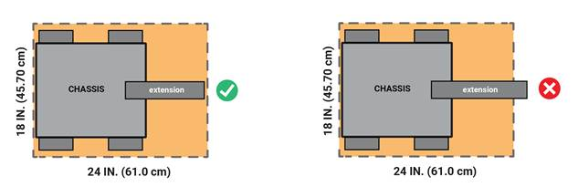
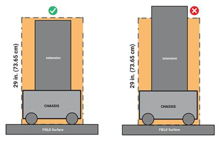
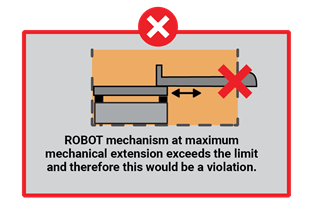
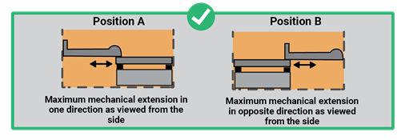
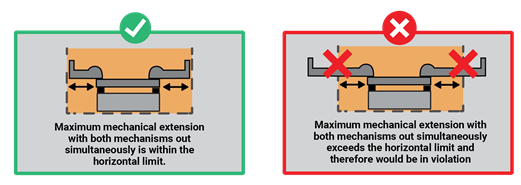
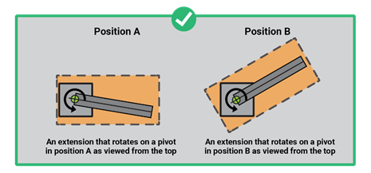
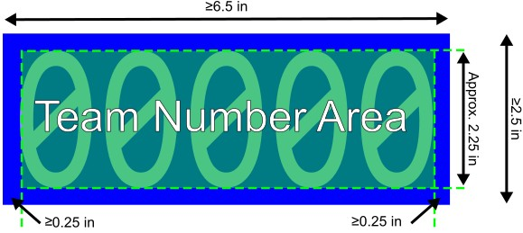
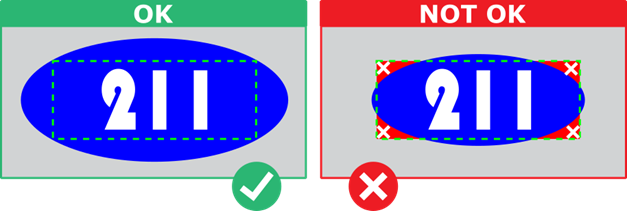
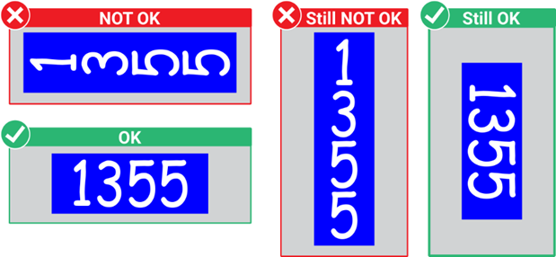

القواعد المذكورة أدناه تتناول صراحة الأجزاء والمواد القانونية وكيف يمكن استخدام هذه الأجزاء والمواد على ROBOT. ROBOT هو تجميع كهروميكانيكي بني من قبل فريق FIRST Tech Challenge للعب لعبة الموسم الحالي ويتضمن جميع الأنظمة الأساسية المطلوبة لتكون مشاركًا نشطًا في اللعبة القوة والاتصالات والتحكم والحركة حول FIELD.
هناك العديد من الأسباب لهيكل القواعد ، بما في ذلك السلامة والموثوقية والتكافؤ ، وخلق تحد معقول للتصميم ، والالتزام بالمعايير المهنية ، والتأثير على المنافسة.
الغرض الآخر من هذه القواعد هو الحصول على جميع مصادر الطاقة وأنظمة التشغيل النشطة على ROBOT (على سبيل المثال ، البطاريات والمحركات وأجهزة الخدمة ومتحكماتها) من مجموعة محددة جيدًا من الخيارات. هذا لضمان أن جميع الفرق لديها إمكانية الوصول إلى نفس موارد التشغيل وأن INSPECTORS يمكن أن تقيم بدقة وكفاءة قانونية جزء معين.
قواعد بناء ROBOT في هذا القسم تنطبق فقط على بناء ROBOT الخاص بك كما قد يتم فحصها. قواعد لعبة MATCH وعواقب انتهاك القواعد أثناء لعبة MATCH موضحة في القسم قواعد اللعبة 11 (G).
يتكون ROBOTS من COMPONENTS و MECHANISMS.
العديد من القواعد في هذا القسم تشير إلى البنود التجارية المتاحة (COTS). يجب أن يكون عنصر COTS جزءًا قياسيًا (أي ليس طلبًا مخصصًا) متاحًا عادةً من VENDOR لجميع الفرق للشراء. لتكون قطعة COTS ، يجب أن يكون COMPONENT أو MECHANISM في حالة غير متغيرة ، غير معدلة (باستثناء تثبيت أو تعديل أي برنامج). العناصر التي لم تعد متوفرة تجارياً ولكنها تعادل وظيفياً الحالة الأصلية كما تم تسليمها من VENDOR تعتبر COTS.
المثال 1: فريق يطلب لوحات 2 ROBOT من شركة RoboPanels ويتلقى كلتا العناصر. لقد وضعوا (1) في مخزنهم وخططوا لاستخدامه لاحقاً في الآخر، يقومون بحفر ثقوب لتخفيف الوزن. لا تزال اللوحة الأولى تصنف على أنها عنصر COTS ، لكن اللوحة الثانية هي الآن FABRICATED ITEM ، حيث تم تعديلها.
المثال 2: يحصل فريق على مخططات متاحة علنًا لوحدة محرك تتوفر عادة من Wheels-R-Us Inc. ويجعل متجر الآلات المحلي We-Make-It, Inc. يصنع نسخة من الجزء بالنسبة لهم. الجزء المنتج ليس قطعة COTS ، لأنه لا يتم نقله عادة كجزء من المخزون القياسي لـ We-Make-It ، Inc.
المثال 3: يحصل فريق على رسومات تصميم متاحة للجمهور من نشرة مهنية ويستخدمها لتصنيع علبة التروس لـ ROBOT الخاصة بهم. تعتبر رسومات التصميم عنصر COTS ويمكن استخدامها كمادة خام لتصنيع علبة التروس. علبة التروس النهائية نفسها ستكون FABRICATED ITEM وليس قطعة COTS.
المثال 4: جزء COTS الذي يحتوي على علامات ملصقة غير وظيفية إضافية لا يزال يعتبر جزء COTS ، ولكن جزء COTS الذي يحتوي على ثقوب تركيب محددة للجهاز إضافية هو FABRICATED ITEM.
المثال 5: فريق واحد لديه علبة COTS التي تم إيقافها. إذا كان علبة التروس COTS تعادل وظيفياً حالتها الأصلية، فيمكن استخدامها.
المصدر VENDOR هو مصدر عمل مشروع للمواد COTS والذي يفي بجميع المعايير التالية:
A. لديه رقم تعريف ضريبي فيدرالي في الحالات التي يكون فيها VENDOR خارج الولايات المتحدة ، يجب أن يمتلكوا شكلًا معادلًا من التسجيل أو الترخيص مع حكومة بلدهم الأصلي الذي يثبت ويؤكد وضعهم كشركة شرعية مرخصة للعمل داخل ذلك البلد.
B. ليست "شركة تابعة مملوكة بالكامل" لفريق FIRST أو مجموعة من الفرق. في حين أنه قد يكون هناك بعض الأفراد المنتسبين إلى كل من الفريق و VENDOR ، يجب أن تكون أعمال وأنشطة الفريق و VENDOR قابلة للفصل تمامًا.
C. يجب أن يحافظوا على مخزون أو قدرة إنتاج كافية حتى يتمكنوا من شحن أي منتج عام (أي غير FIRST فريد) في الوقت المناسب. ومن المعروف أن بعض الظروف غير العادية (مثل انقطاع سلسلة التوريد العالمية و / أو فرق 1,000 FIRST جميعها طلب نفس الجزء في وقت واحد من نفس VENDOR) قد يسبب تأخيرات غير نموذجية في الشحن بسبب الطلبات المتأخرة حتى لأكبر VENDORS. مثل هذه التأخيرات بسبب أعلى من معدل الطلبات العادية مبررة. قد لا ينطبق هذا المعيار على المنتجات المصنوعة حسب الطلب من مصدر هو VENDOR ومصنع.
على سبيل المثال ، قد تبيع VENDOR أحزمة مرنة يرغب الفريق في الحصول عليها لاستخدامها كمسارات على نظام القيادة. VENDOR يقطع الحزام إلى طول مخصص من مخزون الرف القياسي الذي يتوفر عادةً، ويقوم بتلحينه إلى حلقة لإنشاء مسار، ويشحنه إلى فريق. صناعة مسار العمل تستغرق ثلاثة أسابيع وأربعة أسابيع. هذا يعتبر FABRICATED ITEM، و2 أسبوع وقت السفينة مقبولة. بدلاً من ذلك، قد يقرر الفريق تصنيع المسارات بأنفسهم. لتلبية هذا المعيار ، يجب على VENDOR فقط شحن طول الحزام من مخزون الرف (أي عنصر COTS) إلى الفريق في غضون أيام عمل 5 وترك لحام القطع للفريق. VENDOR 2
D. يجعل منتجاتهم متاحة لجميع فرق تحدي التكنولوجيا FIRST. يجب أن لا يحد VENDOR من المعروض أو يجعل المنتج متاحًا لعدد محدود من فرق FIRST Tech Challenge فقط.
والهدف من هذا التعريف هو أن يكون شاملًا قدر الإمكان للسماح بالوصول إلى جميع المصادر المشروعة ، مع منع المنظمات المخصصة من توفير منتجات للأغراض الخاصة لمجموعة فرعية محدودة من الفرق في محاولة للتحايل على أي قواعد محاسبة التكاليف المعمول بها.
FIRST يرغب في السماح للفرق أن يكون لها أوسع مجموعة ممكنة من المصادر المشروعة، والحصول على عناصر COTS من المصادر التي توفر لهم أفضل الأسعار ومستوى الخدمة المتاحة. كما تحتاج الفرق إلى الحماية من التأخيرات الطويلة في توفير الأجزاء التي ستؤثر على قدرتها على إكمال ROBOT الخاص بها. موسم البناء قصير ، لذلك يجب أن يكون VENDOR قادرًا على الحصول على منتجاتهم ، وخاصة العناصر الفريدة FIRST ، إلى الفريق في الوقت المناسب.
من الناحية المثالية ، يجب أن يكون للـ VENDORS المختار قنوات توزيع فعالة. تذكر أن أحداث FIRST Tech Challenge ليست دائماً بالقرب من المنزل عندما تفشل الأجزاء، يكون الوصول المحلي إلى مواد استبدال في كثير من الأحيان أمرًا حاسمًا.
FABRICATED ITEM هو أي COMPONENT أو MECHANISM التي تم تغييرها أو بناؤها أو صبها أو بناؤها أو اختلاقها أو إنشاؤها أو قطعها أو معالجتها الحرارية أو معالجتها أو تصنيعها أو تعديلها أو طلاءها أو إنتاجها أو طلاء سطحها أو استحضارها جزئياً أو بالكامل إلى الشكل النهائي الذي سيتم استخدامه على ROBOT.
لاحظ أنه من الممكن أن يكون البند (عادة المواد الخام) لا COTS ولا FABRICATED ITEM. على سبيل المثال، الطول 20 قدم (~610 سم) من الألومنيوم الذي تم تقطيعه إلى قطع 5 قدم (~152 سم) من قبل الفريق للتخزين أو النقل ليس COTS (إنه ليس في الحالة التي تم استلامها من VENDOR) ، ولا FABRICATED ITEM (لم يتم إجراء القطع لدفع الجزء نحو شكله النهائي على ROBOT).
قد يطلب من الفرق تقديم وثائق (أي الرجوع إلى القاعدة ذات الصلة في هذا الدليل) تثبت شرعية العناصر أثناء التفتيش عندما تحدد قاعدة حدود لجزء قانوني (على سبيل المثال ، المحركات ، أجهزة الخدمة ، حدود التيار ، الإلكترونيات COTS).
إذا كان لدى فريقك سؤال حول شرعية جزء ما، يرجى إرسال سؤالك عبر البريد الإلكتروني إلى customerservice@firstinspires.org للحصول على قرار رسمي. يجب أن تستخدم هذه العملية أيضًا للحصول على الموافقة على الأجزاء / الأجهزة البديلة لإدراجها في مواسم FIRST Tech Challenge في المستقبل.
يمكن أن تكون FIRST Tech Challenge منافسة عالية الاتصال وقد تتضمن لعبة صارمة. في حين أن القواعد تهدف إلى الحد من الأضرار المتعمدة لـ ROBOTS، التفاعل بين ROBOTS مسموح به ومتوقع. يجب على الفرق تصميم ROBOTS لتكون قوية.
R101 *( ) *إنه فريقك (ROBOT) يجب أن يتم بناء ROBOT و MAJOR MECHANISMS من قبل فريق FIRST Tech Challenge الذي قام بالتسجيل في الحدث و يعتزم استخدام ROBOT للمشاركة في MATCHES أو كجزء من الجوائز الحكم عليها.
MAJOR MECHANISM هي مجموعة من COMPONENTS و / أو MECHANISMS تجمع معا لمعالجة على الأقل 1 تحدي اللعبة: حركة ROBOT، التلاعب بـ SCORING ELEMENT، التلاعب بعنصر FIELD، أو أداء مهمة يمكن تسجيلها دون مساعدة ROBOT آخر.
تتطلب هذه القاعدة أن يتم بناء ROBOT و MAJOR MECHANISMS من قبل فريقه ولكنها لا تهدف إلى حظر أو تثبيط المساعدة من فرق أخرى (على سبيل المثال ، تصنيع العناصر ، ودعم البناء ، وكتابة البرمجيات ، وتطوير استراتيجية اللعبة ، والمساهمة في COMPONENTS و / أو MECHANISMS).
وتشمل الأمثلة التي لا تعتبر عموما MAJOR MECHANISMS، وبالتالي لا تخضع لهذه القاعدة، على سبيل المثال لا الحصر:
A. مجموعة من علبة التروس،
B. COMPONENT أو MECHANISM التي هي جزء من MAJOR MECHANISM، أو
C. أدوات COTS
الغرض من هذه القاعدة هو أن فريق ROBOT هو منتج يمثل خبرة أعضاء الفريق الحاليين ويهدف إلى تثبيط الحلول الكاملة التي يتم توفيرها بالكامل من قبل المنظمات أو الشركات الخارجية. انظر أيضا R301 و R303.
R102 *STARTING CONFIGURATION يقتصر على مكعب 18 بوصة. في STARTING CONFIGURATION (التكوين الفيزيائي الذي يبدأ فيه ROBOT MATCH) ، يجب أن تكون جميع أجزاء ROBOT ثابتة تمامًا ، ويجب أن تكون ROBOT مكتملة تمامًا داخل 18 بوصة (45.70 سم) عرضًا ، بواسطة 18 بوصة (45.70 سم) طولًا ، بواسطة 18 بوصة (45.70 سم) حجم مرتفع.
إذا كان ROBOT يستخدم MECHANISMS قابلة للتبادل لكل قواعد الأهلية 3.3 MATCH ، يجب أن تكون الفرق مستعدة لإظهار الامتثال لهذه القاعدة و R105 في جميع التكوينات.
أي SCORING ELEMENTS مشحون مسبقًا يمكن أن يمتد خارج قيود الحجم الأولي.
R103 *قد يساعد ROBOTS في الاحتفاظ بـ STARTING CONFIGURATION. في STARTING CONFIGURATION ، يجب أن تكون ROBOTS ذاتية الدعم بالكامل (أي لا تمارس قوة على جانبي أو أعلى أداة القياس). يمكن لـ ROBOTS تحقيق ذلك باستخدام أي مزيج من:
A. الوسائل الميكانيكية أثناء إيقاف تشغيلها، و/أو
B. بدء تشغيل OpMode الذي يضع أجهزة الخدمة والمحركات في الموقف الثابت المطلوب. يمكن لـ OpMode التحكم في المحركات والأجهزة المساعدة للحفاظ على موقعها للحفاظ على STARTING CONFIGURATION.
ROBOTS يحافظ على STARTING CONFIGURATION أثناء التفتيش أو ينتظر بدء تشغيل MATCH قد يتعين عليه القيام بذلك لعدة دقائق ويجب أن يحد من إمكانية الفشل الحراري (على سبيل المثال ، عدم توقف المحركات ضد توقف صارم). يجب على الفرق أن تكون حذرة بشكل خاص عند تشغيل ROBOT قيد التشغيل أثناء التفتيش، يرجى إبلاغ INSPECTOR أن ROBOT تعمل.
R104 *لا يوجد حد للوزن ROBOT. لا يوجد حد واضح لوزن FIRST للتحدي التكنولوجي ROBOTS يلعب BIOBUZZ.
على الرغم من عدم وجود حد رسمي للوزن ، إلا أن الفرق يجب أن تنظر في تأثير وزن ROBOT’S على عوامل مختلفة بما في ذلك ، على سبيل المثال لا الحصر:
R105 يجب أن تبقى ROBOT كجمعية واحدة، وهناك حدود لمدى توسعها. بعد بدء MATCH ، قد تتوسع ROBOTS خارج STARTING CONFIGURATION ولكنها لا تزال تخضع لقيود الحجم النسبية إلى ROBOT ، بناءً على STARTING CONFIGURATION الأولي. القيود المفروضة على الحجم هي:
A. بعد بدء MATCH ، يمكن أن تتوسع ROBOTS إلى ما وراء STARTING CONFIGURATION ولكن في جميع الأوقات يجب أن تبقى داخل 18 بوصة. (45.70 سم) من خلال 24 بوصة. (61.0 سم) من خلال 29 بوصة. (73.65 سم) حجم الحجم العالي عند التوسع الكامل لكل G416 ،
B. يجب أن يكون ROBOTS مقيدًا جسديًا ليتسع ضمن هذه الحدود دون استخدام البرمجيات ، و
C. لا يجوز تصميم ROBOTS للفصل المتعمد لـ COMPONENTS.
يتم تعريف الحد الحدودي للحجم بالنسبة للسطح FIELD ويتم توجيهه بحيث يكون البعد 29 بوصة (73.65 سم) هو دائما الارتفاع الرأسي فوق سطح FIELD.
الشكل 12 ـ 1: حد التوسع عرض من الأعلى

الشكل 12 ـ 2: حد التوسع النظرة الجانبية

يتم تعريف حجم القياس بالنسبة للسطح FIELD ويتم توجيهه بحيث يكون طول 29 بوصة (73.65 سم) هو دائما الارتفاع الرأسي فوق سطح FIELD.
يتم قياس ROBOTS في تكوينات مستقرة التي سيستخدمونها أثناء اللعب العادي على FIELD (أي ، مع لمس عجلاتهم جميعًا على TILES). إذا كان ROBOT مائلًا قليلاً بسبب التفاعلات على FIELD ، فهذا ليس انتهاكًا لهذه القاعدة إذا كان ROBOT لا يزال ضمن حجم التحجيم عندما يتم إعادته إلى تكوين مستقر.
يجب أن تكون الفرق مستعدة لإثبات لـ INSPECTORS أن ROBOT ليس لديها تكوينات عندما تكون خارج حجم القياس. يجب أن يظهر ROBOTS أقصى امتداداتها الميكانيكية خلال عملية التفتيش. ROBOT التي يمكن أن تتجاوز ميكانيكيا الحد من الحجم سيكون في انتهاك حتى لو كان ROBOT لديها البرمجيات الحد من موقع التمديد خلال MATCH. (الشكل 12 ـ 3)
الشكل 12 ـ 3: حد التوسع انتهاك حد الحجم

يتم السماح بـ ROBOT مع MECHANISM واحد يمكن أن يمتد من جانبي ROBOT طالما أن البعد الإجمالي عند أقصى امتداد ميكانيكي لا يتجاوز حد الحجم. (الشكل 12 - 4)
الشكل 12 ـ 4: حد التوسع التوسع المسموح به

ROBOT مع العديد من MECHANISMS التي لا ترتبط ميكانيكيا التي يمكن أن تمتد من جانبين من ROBOT في وقت واحد سيكون NOT مسموح بها إذا كان البعد الأفقي الكلي في أقصى امتداد ميكانيكي يتجاوز حد الحجم (الشكل 12 × 5).
الشكل 12 ـ 5: حد التوسع التوسع في وقت واحد

ROBOT مع امتداد على محور الذي يدور في المستوى الأفقي سيكون مسموح به طالما أن البعد الإجمالي لا يتجاوز حد الحجم في أي نقطة من رحلته (الشكل 12 × 6).
الشكل 12 ـ 6: حد التوسع التوسع الدوار

R201 * ROBOTS يجب أن تكون مصممة بحيث أنها لا تضر أي شيء أو جعل فوضى في ARENA. يجب أن لا تشكل ROBOT خطراً على صنع فوضى أو تشكل خطراً على أي شيء في ARENA.
الغرض من هذه القاعدة هو أن فرق يجب تصميم ROBOTS بطريقة تتجنب تلف ARENA وتقليل خطر إطلاق ROBOTS للمواد التي تتطلب التنظيف ويمكن أن تؤدي إلى تلف و / أو تأخير MATCH.
من المتوقع أن يخضع SCORING ELEMENTS لمقدار معقول من التآكل أثناء التعامل مع ROBOTS ، مثل الخدش أو العلامة. التشويش، تمزيق القطع، أو العلامة بشكل روتيني ومتكرر SCORING ELEMENTS هي انتهاكات لهذه القاعدة و G406.
أمثلة على خصائص خطر الضرر ROBOT تشمل، على سبيل المثال لا الحصر:
A. أجهزة الجر التي تتمتع بخصائص معروفة بأنها تضر بالطابق TILE،
B. COMPONENTS ذات الحواف الحادة أو النتوءات الحادة المكشوفة، و
C. الميزات ذات الأسطح الحادة التي تخدش الأشياء التي تفركها.
أمثلة على خصائص ROBOT في خطر جعل الفوضى تشمل ، على سبيل المثال لا الحصر:
D. الاستخدام المفرط لمواد التشحيم التي قد تتدفق أو تتساقط أثناء تشغيل ROBOT.
E. أي COMPONENT غير مقيدة بما فيه الكفاية، بما في ذلك الحمولة الفضفاضة مثل الرمل، حبوب القهوة، قمامة القطط، البريق، أو محامل الكرات، بحيث يمكن أن يتم إطلاقها على FIELD أثناء MATCH،
F. المواد السائلة أو الهلامية،
G. مسدس إطارات، و
H. مواد التشحيم الأخرى بما في ذلك مسحوق الجرافيت.
R202 *تصميم ROBOTS و OPERATOR CONSOLES للسلامة واللعب العادل. يجب ألا تكون أجزاء و ROBOT و OPERATOR CONSOLE مصنوعة من مواد خطرة، أو غير آمنة، أو تسبب حالة غير آمنة، أو تتداخل مع تشغيل أجزاء أخرى من ROBOTS أو FIELD STAFF.
أمثلة على العناصر التي قد تنتهك هذه القاعدة تشمل، على سبيل المثال لا الحصر:
A. الدرع أو الستائر أو أي أجهزة أخرى مصممة أو تستخدم فقط للحد من رؤية أي من أعضاء DRIVE TEAM،
B. أجهزة الصوت التي تنتج صوتًا بمستوى كافٍ لتشتيت الانتباه أو تحاكي أصوات MATCH،
C. أي أجهزة أو ديكورات مصممة خصيصًا للتدخل في قدرات الاستشعار عن بعد لـ ROBOT آخر ، بما في ذلك أنظمة الرؤية ، وأجهزة البحث عن المدى الصوتي ، والسونار ، وأجهزة الكشف عن القرب بالأشعة تحت الحمراء ، وما إلى ذلك. وهذا يشمل الصور على ROBOT الخاصة بك التي تستخدم 36 h 11 AprilTags أو تقليدها عن كثب ،
D. الغازات القابلة للاشتعال أو أي جهاز مخصص لإنتاج اللهب أو الألعاب النارية،
E. المواد الخطرة مثل الزئبق السائل أو الرصاص
F. مصادر الضوء عالية الكثافة المستخدمة على ROBOT يجب أن تكون مضاءة فقط لفترة قصيرة أثناء التصويب وقد تدعو إلى فحص إضافي، ويمكن أن يطلب من الفرق إيقاف تشغيل أو تعديل الإضاءة الخاصة بها حسب تقدير رئيس REFEREE و/أو LRI،
G. المواد الحيوانية
H. أي جهاز مصمم لإلحاق الضرر أو تحويل ROBOTS المتنافس،
I. الأجهزة أو الظروف التي تشكل خطرًا غير ضروريًا من التشابك ،
J. الإضاءة الزخرفية أو الوظيفية التي تلمع بمعدل أكبر من 5 هرتز ستدعو إلى فحص إضافي وقد يطلب من الفرق إيقاف تشغيل أو تعديل إضاءاتها حسب تقدير رئيس REFEREE و/أو LRI ، و
K. المواد الأخرى غير المدرجة التي تنتهك روح القاعدة المتعلقة باللعب الآمن والنزيه.
R203 *يجب تصميم ROBOTS ليتم إزالته بسرعة من FIELD دون الحاجة إلى طاقة. يجب أن يسمح ROBOTS بإزالة SCORING ELEMENTS من عناصر ROBOT و ROBOT من عناصر FIELD أثناء إيقاف تشغيلها.
قد تسمح بعض الأحداث للفرق باستخدام طاقة ROBOT أثناء إعادة تعيين FIELD (على سبيل المثال ، قيادة ROBOT إلى حافة FIELD) ولكن يجب تصميم ROBOTS بحيث لا يكون ذلك مطلوبًا.
R204 *لا تمسك الأرضية. لا يجوز لـ ROBOTS استخدام أي MECHANISM مصممة لزيادة القوة الضاغطة إما عن طريق الاستيلاء على أسطح FIELD أو باستخدام شكل من أشكال تدفق الهواء الناتج لتوفير امتصاص إلى الأسفل.
R301 *COTS MECHANISMS هي قانونية ولكن لها حدود. COTS MAJOR MECHANISMS مصممة عمداً لإكمال مهمة لعبة محظورة. الاستثناءات المسموح بها من هذه القاعدة هي:
A. COTS محرك CHASSIS ، شريطة أن لا تنتهك أي من الأجزاء الفردية أي قواعد أخرى ، و
B. COTS MAJOR MECHANISMS تم إنشاؤها كجزء من البرنامج الرسمي تحدي التكنولوجيا FIRST StarterBots .
تهدف أجزاء COTS إلى مساعدة الفرق على تصميم وبناء ROBOT MECHANISMS لاستكمال مهام اللعبة وحل التحديات ولكنها لا تهدف إلى أن تكون حلول مصممة خصيصًا لاستكمال أهداف اللعبة.
البائع الذي يبيع "بناء للطباعة" تصنيع الحلول المتاحة للجمهور والتي تم بناؤها لهذا الغرض يتعارض مع روح هذه القاعدة.
R302 *يمكن تعديل قطع الغيار والمواد الخام. COTS يمكن تعديل المواد الخام المسموح بها والقطع القانونية COTS (الحفر والقطع والطلاء وما إلى ذلك) طالما لم يتم انتهاك قواعد أخرى.
المواد الخام تشير إلى مخزون البناء غير المكتمل بما في ذلك، على سبيل المثال لا الحصر:
A. مخزون الأوراق
B. الأشكال المطحونة،
C. المعادن والبلاستيك والمطاط والخشب، و
D. مغناطيسات
R303 *COTS يجب أن يكون DoF واحد. COTS COMPONENTS و MECHANISMS يجب ألا تتجاوز درجة حرية ميكانيكية واحدة (DoF). أمثلة على درجة حرية واحدة مسموح بها COTS MECHANISMS و COMPONENTS هي كما يلي:
A. مجموعة المنزلقات الخطيّة،
B. مجموعة أجهزة التشغيل الخطية،
C. صناديق التروس ذات سرعة واحدة (غير متغيرة)
D. المكعب
E. أداة التشغيل،
F. المسمار الرئيسي، و
G. عقدة DoF واحدة.
الاستثناءات المسموح بها من هذه القاعدة هي:
H. أجهزة القفز (مفاتيح، محامل، وما إلى ذلك)
I. عجلات هولونومية (omni أو mecanum)
J. أدوات قياس المسافات ذات العجلات الميتة،
K. المواد التي تنقل الحركة بين COMPONENTS غير المتماسك (مثل المفاصل العالمية، وربطات العمود المرن، ومواد مماثلة) ، و
L. العناصر التي تربط الهياكل بزوايا متغيرة (مثل ربط المفاصل الكروية، نهايات العصا، وغيرها من العناصر المماثلة).
وتمتد نية هذه القاعدة أيضًا إلى منع COMPONENTS الفردية المتخصصة للغاية المصممة فقط لتجميعها إلى DoF COTS COMPONENT متعددة.
الاختبار العام لدرجة حرية واحدة MECHANISM هو ما إذا كان يمكن التنبؤ بشكل عام بتوجيه وموقف كل COMPONENT في MECHANISM بناءً على توجيه وموقف COMPONENT واحد (مثل المدخل) من النظام.
المثال 1: تتكون مجموعة محركات الميكانوم من وحدات محرك 4 المستقلة ، كل منها يحتوي على DoF واحد (يتجاهل DoF من عجلات الميكانوم كما هو مسموح به في هذه القاعدة) ، مثبتة على هيكل مشترك (على سبيل المثال ، CHASSIS). الإجمالي MECHANISM لا يزال DoF واحد.
المثال 2: وحدات قياس مسافة العجلات الميتة ، المسموح بها بهذه القاعدة ، تتكون عادة من عجلة 1 DoF (تجاهل تأثير العجلة الهولونومية) توفر حركة إلى الأمام / إلى الوراء وقوة الربيع توفر حركة دورانية أو عمودية فريدة إضافية ، مما يخلق نظام 2 DoF.
المثال 3: مخالب العقدة البسيطة ، التي تتكون من محرك واحد يحرك فك العقدة 2 في وقت واحد أو محركين مزدوجين يتحكم كل منهما في فك العقدة المستقل ، هي عموما DoF واحد. ومع ذلك ، فإن المقبضات التي تتضمن محركات إضافية توفر إجراءات إضافية للتواء و / أو الانحناء (مثل معصم) تضيف درجات حرية محظورة في COTS MECHANISMS.
R304 *يمكن إعادة استخدام البرمجيات والتصاميم والأجزاء المخصصة من عام إلى آخر. البرمجيات ROBOT والتصاميم و FABRICATED ITEMS التي تم إنشاؤها قبل Kickoff مسموح بها.
R305 *SCORING ELEMENTS غير مسموح بها لبناء ROBOT. الموسم الحالي SCORING ELEMENTS أو نسخ من SCORING ELEMENTS غير مسموح باستخدامها كجزء من بناء ROBOT.
ROBOT SIGN هو التجميع المطلوب الذي يعلق على ROBOT. يحدد ROBOT SIGN في وقت واحد رقم فريق ROBOT’S وكذلك انتمائه إلى ALLIANCE ل FIELD STAFF. وتشمل المعايير المستخدمة في كتابة هذه القواعد ما يلي:
نموذج ROBOT SIGN متاح للتنزيل بحجم الرسالة الـ US و A4.
R401 *الحد الأدنى من اثنين ROBOT SIGNS لكل ROBOT. ROBOT SIGNS يجب وضع في أماكن منفصلة على الأقل 2 على ROBOT. يجب أن تكون هذه المواقع على الأسطح المقابلة أو المجاورة ل ROBOT و ≥90 درجة بعيدا عن بعضها البعض. يمكن استخدام جميع الأسطح ROBOT المرئية إلى FIELD STAFF لوضع ROBOT SIGNS بما في ذلك الجزء العلوي من ROBOT. يجب أن يستوفي ROBOT SIGNS المعايير التالية:
A. تكون مصنوعة من مادة قوية
B. على الأقل عرضها 6.5 بوصة (16.5 سم)
C. الحد الأدنى لارتفاع 2.5 بوصة (6.4 سم) (الشكل 12 ‐ 7) ، و
D. أن تكون مدعومة من قبل هيكل/إطار ROBOT.
الغرض من هذه القاعدة هو أن يرى FIELD STAFF بسهولة ROBOT SIGNS من على الأقل 12 أقدام (3.65 أمتار) قبل وأثناء وبعد MATCH.
يجب أن يكون ROBOT SIGNS قويًا بما فيه الكفاية لتحمل صعوبات لعب MATCH ، ولكن لا توجد إرشادات محددة حول ما هو قوي بما فيه الكفاية. يجب على الفرق أن تبذل جهداً حسن النية بكل ما لديهم
الشكل 12 ـ 7: رقم الفريق ROBOT SIGN الحجم

R402 *ROBOT SIGNS تشير إلى ALLIANCE الخاص بك. يجب أن يحتوي كل ROBOT SIGN على مستطيل مع خلفية ضبابية حمراء أو زرقاء صلبة بحجم 6.5 بوصة × 2.5 بوصة (16.50 سم × 6.35 سم) على الأقل للإشارة إلى لون ALLIANCE (الشكل 12 × 7) ، كما تم تعيينها في جدول MATCH في الحدث. يحظر وضع علامات مرئية على ROBOT SIGNS عند تركيبها على ROBOT، بخلاف ما يلي:
A. تلك المطلوبة لكل R403،
B. كميات صغيرة من شريط الشريط الحلزوني، أو مواد التثبيت الصلبة، أو المكافئات الوظيفية،
C. المناطق الضيقة ذات الألوان المختلفة المكشوفة في الزوايا أو الطيات أو القطع
D. علامات ضيقة على الخلفية فقط لأغراض النموذج، و
E. لا يمكن تشغيلها أو الاعتماد على الطاقة من أي مصادر لإضاءة / الكشف عن لون ALLIANCE.
ROBOT SIGNS التي يمكن عكسها أو تكوينها يجب ألا تسمح لون ALLIANCE المعاكس أن يكون مرئيًا لـ FIELD STAFF ، إلا عندما تسمح به هذه القاعدة.
الشكل 12 ـ 8: الحد الأدنى لحجم مستطيل ALLIANCE

R403 *رقم الفريق على ROBOT SIGNS. يجب أن يتم عرض أرقام الفريق ووضعها على ROBOT SIGN كما هو مبين في الشكل 12 × 7 ، الشكل 12 × 9 ، والشكل 12 × 10 و تلبية المعايير الإضافية التالية:
A. تتكون من أرقام عربية بيضاء غير شفافة صلبة (على سبيل المثال، 1,2,3,4) التي يبلغ ارتفاعها حوالي 2.25 بوصة (5.70 سم) ،
B. يجب أن يكون هناك ما لا يقل عن 0.25 بوصة (0.60 سم) من الخلفية المحيطة بالأرقام،
C. لا يجوز أن تكون الأرقام مكدسة رأسياً (الشكل 12 ‐ 10) ،
D. تكون مصنوعة من مواد قوية، و
E. لا يمكن تشغيلها أو الاعتماد على الطاقة من أي مصادر لإضاءة/كشف الأرقام.
الشكل 12 ـ 9: الرقم القانوني للفريق 21001 اللعب على الأزرق ALLIANCE
الشكل 12 ـ 10: أمثلة توجيه رقم الفريق للفريق 1355 يلعب على الأزرق ALLIANCE

إذا لم يكن لدى فريق في حدث ROBOT SIGNS قانونيًا تمامًا ، وليس هناك طابعة ملونة أو وسائل أخرى متاحة في الحدث لإنشاء ROBOT SIGN قانوني ، فقد يوافق رئيس REFEREE على بديل بديل لاستخدامه في الحدث.
يجب أن تكون أرقام الفرق قوية بما فيه الكفاية لتحمل صعوبات لعبة MATCH ، ولكن لا يوجد توجيه محدد حول ما هو قوي بما فيه الكفاية. يجب على الفرق أن تبذل جهداً حسن النية بكل ما لديهم إذا كانت المواد المتاحة محدودة في الحدث ، فيمكن ببساطة كتابة بديل ROBOT SIGNS بخط اليد على ورق عادي.
العناصر الزخرفية الصغيرة والفجوات في الأرقام لا بأس بها طالما أن رقم الفريق يبقى قابلاً للقراءة من مسافة 12 قدم (3.65 متر) ويمكن تمييزه من نظرة سريعة.
أمثلة على أرقام الفرق المحظورة على ROBOT SIGNS تشمل، على سبيل المثال لا الحصر:
R501 *محركات محددة فقط مسموح بها. الحركات المحركية المسموح بها هي:
الجدول 12 - 1: المخصصات للسيارات
| اسم المحرك | أرقام الأجزاء المتاحة | الملاحظات |
|---|---|---|
| AndyMark NeveRest 12 V DC | am- 3104, am- 3104 b | |
| AndyMark NeveRest هيكس 12 V DC | am- 3104 c | |
| goBILDA السترة الصفراء 520 x السلسلة 12 V DC | (5201-0002-0026) ، إلخ. | سلسلة 5201 و 5202 و 5203 و 5204 |
| goBILDA 5000 السلسلة 12 V DC | (5000-0002-4008) ، إلخ. | |
| الروبوتات الحديثة / MATRIX 12 V DC | 5000-0002-0001 | تم إيقاف صناعتها |
| NFR المنتجات Yuksel 12 V DC | NFR-600-100-000 | |
| REV Robotics HD هيكس 12 V DC | REV - 41-1291 | |
| REV Robotics Core Hex 12 V DC | REV - 41-1300 | |
| الروبوتات Studica مافريك 12 V DC | 75001 | |
| محرك الروبوتات SWYFT SWYFT Spike | SR-MOTOR-DC-01 | |
| TETRIX MAX 12 V DC | 739530, 39530 | تم إيقاف صناعتها |
| TETRIX MAX TorqueNADO 12 V DC | W44260 | |
| WATTOS ستينغراي 12 في DC | WDM12 | |
| محركات الاهتزاز والتركيز التلقائي المثبتة في المصنع المقيمة في أجهزة الحوسبة COTS (على سبيل المثال، محرك الضجيج في الهاتف الذكي) ؛ يمكن استخدامها فقط كجزء من الجهاز ولا يمكن إزالتها و / أو إعادة استخدامها. هذه المحركات لا تحسب نحو الحد الأقصى في R503 . | ||
| محركات متكاملة مع جهاز استشعار COTS (مثل LIDAR، السونار المسح) ، شريطة ألا يتم تعديل الجهاز إلا لتسهيل التثبيت. هذه المحركات لا تحسب نحو الحد الأقصى في R503 . | ||
قد يتم إضافة محركات إضافية إلى قائمة المحركات القانونية في التحديثات المستقبلية لدليل المنافسة.
يتم بيع العديد من محركات التروس القانونية مع وضع علامات على أساس التجميع بأكمله. يمكن استخدام هذه المحركات مع أو بدون علبة التروس المقدمة، و/أو مع أي علبة تروس متوافقة أخرى.
R502 *استخدام السيرفو مقيد. يجب أن تستوفي أجهزة التشغيل الخدمية المتطلبات أدناه. يجب أن تكون أجهزة الخدمة متوافقة مع أجهزة تنظيم الطاقة التي يتم استخدامها بها في النهاية (بالنسبة لـ R505) ويمكن أن تتضمن واجهات خروج إضافية لموقع الخدمة (على سبيل المثال ، ردود فعل موقع سلك 4).
الجدول 12 - 2: متطلبات الخدمة عند 6 V
| فئة جهاز التشغيل | قوة الخروج الميكانيكية | التيار الوقائي | المثال السيرفو (بما في ذلك، ولكن لا يقتصر على) |
|---|---|---|---|
| الخدمة | ≤ 8 واط @ 6 فولت | ≤ 4 آمبر @ 6 فولت | AndyMark أجهزة خدمة عالية العزم (am- 4954) |
| أكسون MAX + سيرفو (أكسون MAX +) | |||
| DSSERVO 35 KG بدون قلب (DS3235MG) | |||
| الخدمة الرقمية FEETECH (FT5335M-FB) | |||
| goBILDA خدمة الوضع المزدوج (2000-0025-0003) | |||
| الخدمة الذكية REV Robotics (REV - 41-1097) | |||
| الخدمة الذكية متعددة الأوضاع Studica (75002) | |||
| خدمة خطية | N/A | ≤ 1 آمبر @ 6 فولت | أكتونيكس ميكرو سيرفو خطي (P8-100-252-12-R) |
| هيتيك سيرفو خطي (HLS12-3050-6V) | |||
| جهاز التشغيل الخطي Studica RC (75014) | |||
| يتم تقريب قوة الخروج الميكانيكية الخدمية بواسطة الصيغة التالية (باستخدام بيانات 6 V التي أبلغ عنها الشركة المصنعة): · قوة الخروج الميكانيكية = 0.25 x (عزم الدوران في N-m) x (لا يوجد سرعة تحميل في rad/s) | |||
يجب أن تستوفي أجهزة الخدمة كلا الشرطين لتكون قانونية للاستخدام. الرجوع إلى وثيقة مرجع سريع للتفتيش للحصول على قائمة من أجهزة الخدمة التي تمت الموافقة عليها مسبقا، وإلا يجب أن تكون الفرق قادرة على تقديم وثائق التحقق من مواصفات أجهزة الخدمة. استخدم آلة حاسبة على الانترنت للتحقق من امتثال الطاقة الخارجة.
إذا لم يقدم الشركة المصنعة مواصفات 6 V، يسمح باستخدام أي مواصفات للجهد الذي يتجاوز 6 V.
التيار الوقائي هو الحد الأقصى للتيار الوقائي الممكن للجهاز عند الجهد المحدد، بغض النظر عن أي حدود المستخدم أو البرمجيات القابلة للتعديل VENDOR التي قد تكون متاحة داخل الخدمة.
من المهم التأكد من أن الجهد الذي يقدمه جهاز تنظيم الطاقة المقصود هو ضمن نطاق الجهد التشغيلي للخدمة المطلوبة. يوفر REV Control Hub و REV Expansion Hub 5 فولت إلى servos ، و goBILDA Servo Power Injector ، و REV Servo Power Module ، و Studica Servo Power Block ، و REV Servo Hub يوفر 6 V إلى servos. في حين أن جميع أجهزة الخدمة تقريبًا متوافقة مع 6 V ، قد لا تعمل أجهزة الخدمة مع نطاق الجهد التشغيلي 6-8.4 DCV ، على سبيل المثال ، بشكل صحيح عندما يتم توفير 5 V فقط.
R503 *ROBOTS تقتصر على مجموع محركات 8 و 8 servos. لا يجوز أن يحتوي ROBOT على أكثر من محركات 8 وخدمات 8 من قوائم المحركات المسموح بها لكل R501 و R502 لجميع MECHANISMS المستخدمة في جميع التكوينات.
إذا كان ROBOT لديه تشكيلات متعددة تستخدم في حدث واحد تستخدم MECHANISMS مختلفة، يجب أن يكون مجموع جميع المحركات والأجهزة المساعدة أقل من أو يساوي الحد المحدد في هذه القاعدة.
R504 *لا تعديل أجهزة التشغيل ما لم يسمح بذلك صراحة. لا يجوز تعديل النظام الميكانيكي والكهربائي المتكامل لأي محرك أو جهاز خدمة. لا يجوز تعديل المحركات والأجهزة المساعدة المستخدمة على ROBOT بأي شكل من الأشكال، باستثناء ما يلي:
A. يمكن تعديل دعامات التثبيت و / أو العمود الخارجي / الواجهة (بما في ذلك معدات الدفع) لتسهيل الاتصال المادي للمحرك بالجزء ROBOT والجزء الذي يتم تشغيله ،
B. يمكن تقليص الأسلاك الكهربائية إلى الطول حسب الضرورة ويمكن إضافة موصلات أو ربطات إلى الأسلاك الإضافية (بالنسبة لـ R609) ويمكن استبدال الأغلفة الكهربائية البحتة بأغراض بديلة معادلة وظيفياً.
C. يمكن تعديل أجهزة التشغيل كما هو محدد من قبل الشركة المصنعة (على سبيل المثال، تعيين حدود ناعمة أو تعديل للدوران المستمر) ،
D. يمكن تطبيق العلامة للإشارة إلى الغرض من الجهاز ، والاتصال ، والأداء الوظيفي ، وما إلى ذلك طالما أن العلامة المطبقة من قبل الفريق لا تعيق العلامات المستخدمة لتحديد الجهاز ،
E. يمكن تطبيق العزل على المحطات الكهربائية،
F. الإصلاحات، شريطة أن تكون الأداء والمواصفات الأصلية دون تغيير، و
G. الصيانة الموصى بها من قبل الشركة المصنعة.
R505 *يجب أن يتم التحكم في جميع أجهزة التشغيل وتزويدها بالطاقة من خلال أجهزة معتمدة. باستثناء أجهزة التشغيل أو المروحة أو المحركات المتكاملة مع أجهزة استشعار أجهزة الحوسبة COTS المسموح بها في R501 ، يجب أن تأتي إشارات التحكم في جهاز التشغيل من جهاز تنظيم الطاقة. أجهزة تنظيم الطاقة الوحيدة للمحركات المسموح بها في ROBOT هي:
الجدول 12 - 3: منظمات الطاقة والحدود
| جهاز تنظيم الطاقة | رقم الجزء | حد الحمل لكل جهاز |
|---|---|---|
| مضخة الطاقة الخدمية goBILDA 6 V | 3125-0001-0001 | 2 سيرفو لكل ميناء |
| منافذ المحركات REV Control Hub أو Expansion Hub | REV - 31-1153 / REV - 31-1595 | محركات 2 لكل ميناء |
| محطات الخدمة REV Control Hub أو Expansion Hub | REV - 31-1153 / REV - 31-1595 | 2 سيرفو لكل ميناء |
| وحدة الطاقة الخدمية REV | REV - 11-1144 | 2 سيرفو لكل ميناء |
| REV Robotics Servo Hub | REV - 11-1855 | 2 سيرفو لكل ميناء |
| REV SPARKmini | REV - 31-1230 | 2 محركات لكل جهاز |
| وحدات الطاقة الخدمية Studica | 75005 | 2 سيرفو لكل ميناء |
R506 *يُحظر استخدام الإرسالات والكهرومغناطيسات والمحركات الكهربائية. يُحظر تطبيق التشغيل الكهروميكانيكي من خلال استخدام رلايات إضافية أو مغناطيسات كهربائية أو أجهزة التشغيل الكهربائية أو أنظمة ذات صلة. بالإضافة إلى ذلك، يُحظر أيضًا استخدام الإرسالات والمغناطيس الكهربائي.
R601 *ROBOTS يمكن أن تحتوي فقط 1 بطارية رئيسية. يجب أن تحتوي ROBOTS على بطارية رئيسية NiMH 1 و 1 المعتمدة فقط. هذه البطارية هي المصدر القانوني فقط للطاقة الكهربائية لنظام التحكم في ROBOT والتشغيل أثناء المسابقة ويجب ألا تتغير من حالة الشركة المصنعة للبطارية باستثناء ما يلي: 12
A. يمكن استبدال الفتيل بفتيل COTS متكافئ في الصف 20 A ATM مصغّر ذو شفرة صغيرة مثبت على كل R610، و
B. يمكن استبدال المكونات المثبتة بمكونات أخرى شائعة مثل Anderson Powerpole و XT30 أو أي وصلة ذات قدرة قابلة للمقارنة.
البطاريات الرئيسية المسموح بها فقط هي: ROBOT
الجدول 12 - 4: حزم البطارية القانونية للطاقة الرئيسية ROBOT
| علبة البطارية | رقم الجزء | الملاحظات |
|---|---|---|
| بطارية AndyMark Flat Pack بطارية DC 12 فولت | am- 5290 | |
| بطارية goBILDA 12 V NiMH المتداخلة | 3100-0012-0020 | |
| المصفوفة 12 V 3000 mAh NiMH | 14-0014 | يمكن أن تسمي الروبوتات الحديثة |
| بطارية REV 12 V Slim | REV - 31-1302 | |
| Studica 12 V 3000 mAh NiMH | 70025 | |
| TETRIX MAX 12V 3000mAh NiMH | W39057 | سابقًا 739023 |
| بطارية WATTOS 12 V | WT-NMH1230 |
هناك العديد من البطاريات المماثلة الأخرى المتوفرة من العديد من VENDORS ، ولكن فقط المصنعين المدرجين وأرقام الأجزاء هي قانونية للاستخدام في أحداث التحدي التكنولوجي FIRST.
يمكن استخدام بطاريات أخرى للأجهزة المستقلة كما هو مذكور في R602.
R602 *البطاريات الأخرى مسموح بها فقط للأجهزة الطرفية المستقلة و LEDs فقط. يمكن استخدام بطاريات COTS USB بقدرة 100 Wh أو أقل (27,000 mAh عند 3.7 V) ، مع خروج 5 V / 5 A أقصى أو خروج 12 V / 5 A أقصى باستخدام USB - PD لكل منفذ ، والبطاريات المتكاملة لأجهزة مستقلة مثل الكاميرا (على سبيل المثال ، الكاميرا على طراز GoPro) شريطة أنها:
A. عدم توفير الطاقة إلى أي من محركات ROBOT، و
B. لا تستخدم من قبل أي أجهزة تتلقى إشارات التحكم من نظام التحكم ROBOT (أي أن بطاريات COTS USB يجب أن تبقى معزولة كهربائياً عن أنظمة الطاقة ROBOT). الاستثناءات من الجزء ب من هذه القاعدة هي:
i. مركبات USB ذات الطاقة، و
ii. الهواتف الذكية ROBOT CONTROLLER.
يجب أن يتم تشغيل أي جهاز يستقبل إشارات من جهاز التحكم REV أو Expansion Hub بواسطة بطارية ROBOT الرئيسية.
R603 *قم بتوصيل بطارية ROBOT عبر مفتاح الطاقة الرئيسي. يجب أن يتحكم مفتاح طاقة رئيسي واحد تمامًا في جميع الطاقة التي توفرها بطارية ROBOT لجميع أجهزة تنظيم الطاقة على ROBOT (باستثناء ما هو محدد في R602) بحيث يتم استيفاء جميع الشروط التالية:
A. يجب أن يكون أحد مفاتيح الطاقة المعتمدة التالية:
الجدول 12 - 5: مفاتيح الطاقة القانونية
| مفتاح الطاقة | رقم الجزء |
|---|---|
| AndyMark FTC مفاتيح الطاقة مع العامل | am- 4969 |
| goBILDA مفتاح طاقة بوابة الفيضانات | 3103-0005-0001 |
| REV كابل التبديل والعصا | REV - 31-1387 |
| Studica مجموعة مفاتيح تشغيل / إيقاف الطاقة | 70182 |
| حزمة التبديل TETRIX R/C | W39129 |
| مجموعة مفاتيح الطاقة WATTOS | WTS-SW1220 |
B. يجب تركيبها أو وضعها في مكان يمكن للفريق الوصول إليه ، بعيداً عن الأجزاء المتحركة بسرعة عالية وخطر الضغط ، و
C. يمكن استخدام مفاتيح الطاقة الثانوية على خط 12 V أسفل مفتاح الطاقة الرئيسي.
لا توجد متطلبات محددة لموقع مفتاح الطاقة الرئيسي ، ولكن يجب أن يكون موقعه بعيدًا عن أي أجزاء متحركة عالية السرعة وخطر الضغط. يسمح للفرق بتثبيت مفتاح الطاقة الرئيسي خلف الألواح القابلة للإزالة.
يجب تركيب مفتاح الطاقة الرئيسي على ROBOT بحيث يكون محميًا من اتصال ROBOT إلى ROBOT لتجنب التشغيل غير المقصود أو التلف.
R604 *يجب استخدام الفتيلات وفقًا للتعليمات ولا يجوز تعديلها. الغرض من هذه القاعدة هو أن تستخدم الفرق الفتيلات وفقًا لتوجيهات الشركة المصنعة للأجهزة ، ولا تحاول الحصول على ميزة تنافسية عن طريق تعديل الفتيلات ، أو استبدال الفتيلات بأخرى ذات نقطة انطلاق أعلى ، أو استبدالها بفواتيل ذاتية الإعادة.
R605 *لا يمكن استخدام الإطار ROBOT كمسار حالي. يجب عزل جميع الأسلاك والأجهزة الكهربائية الكهربائية عن الإطار ROBOT. لا يجوز استخدام إطار ROBOT لنقل التيار الكهربائي. لا يسمح بتعليق إلكترونيات نظام التحكم الكهربائي على إطار ROBOT إلا إذا تم استيفاء جميع الشروط التالية:
A. يجب أن تكون الأشرطة / الكابلات المستخدمة من الأجزاء المعتمدة التالية:
الجدول 12 - 6: أشرطة الأرض القانونية ROBOT
| حزام التربة | رقم الجزء |
|---|---|
| AndyMark الحزام المقاوم للأرض | am- 4648 a |
| REV الحزام المقاوم للأرض | REV - 31-1269 |
| كابل الأرض Swyft | SR - الأرض - 01 |
B. يجب أن يتم توصيل الشريط / الكابل مباشرة إلى COTS COMPONENT بالكامل مع رابط XT30 ، ويجب أيضًا توصيله مباشرة إلى إطار ROBOT (عبر المحطة المقاومة) ، و
C. لا يوجد ROBOT COMPONENTS أو MECHANISMS مصممة لتعليق إطار ROBOT الكهربائي إلى FIELD.
لمزيد من التفاصيل حول تركيب حزام الأرض، يرجى الاطلاع على دليل الأسلاك ROBOT.
R606 *يجب أن يكون النظام الكهربائي ROBOT CONTROLLER و ROBOT قابلاً للتفتيش. يجب تركيب ROBOT الكهربائية COMPONENTS مع مراعاة إمكانية الوصول، على النحو التالي:
A. يجب أن تكون جميع أجهزة تنظيم الطاقة (بالنسبة لـ R505) ، والأسلاك المرتبطة بها، وجميع الفتيلات مرئية للتفتيش،
B. يجب تركيب جهاز ROBOT CONTROLLER على جهاز ROBOT بحيث يمكن رؤية أضواء التشخيص أو شاشة الجهاز عند الاقتضاء للتفتيش.
مظهر للتفتيش لا يتطلب أن تكون العناصر مرئية عندما يكون ROBOT في STARTING CONFIGURATION أو عادة أثناء MATCH ، شريطة أن يتمكن الفريق من جعل العناصر مرئية أثناء عملية التفتيش إذا لزم الأمر.
يتم تشجيع الفرق بشدة على جعل أضواء التشخيص مرئية في جميع تكوينات ROBOT المستخدمة أثناء اللعب العادي MATCH. إذا لم يكن LEDs التشخيصي مرئيًا أثناء MATCH ، فقد لا يكون FIELD STAFF قادرًا على تقديم دعم شامل للفريق.
R607 *لا يجوز للدوائر المخصصة توفير طاقة محددة أعلى من 5 V إلا إذا كانت توفر طاقة فقط لـ LEDs. يعتبر أي عنصر كهربائي نشط ليس جهاز تشغيل (محدد في R501) أو جهاز تنظيم الطاقة (محدد في R505) CUSTOM CIRCUIT. لا يجب أن يوفر CUSTOM CIRCUITS فولتاجيات خروجيات قابلة للتنظيم تتجاوز 5 V، إلا إذا كانت تستخدم فقط لتزويد LEDs بالطاقة. CUSTOM CIRCUITS قد تمر من خلال الجهد البطارية غير المنظمة.
R608 *يجب أن تكون جميع أجهزة تنظيم الطاقة متصلة وتشغيل الطاقة من خلال المنافذ المعتمدة. يجب تشغيل جميع أجهزة تنظيم الطاقة (R505) وفقًا لتعليمات الشركة المصنعة ويجب أن يكون الجدول التالي صحيحًا:
الجدول 12 - 7: متطلبات طاقة جهاز تنظيم الطاقة
| جهاز تنظيم الطاقة | رقم الجزء | طريقة تشغيل الكهرباء |
|---|---|---|
| مضخة الطاقة الخدمية goBILDA 6 V | 3125-0001-0001 | يتم تشغيلها فقط باستخدام موصلات XT30 على الجهاز بواسطة البطارية الرئيسية ROBOT |
| REV Control Hub / REV Expansion Hub | REV - 31-1153 / REV - 31-1595 | يتم تشغيلها فقط باستخدام موصلات XT30 على الجهاز بواسطة البطارية الرئيسية ROBOT |
| وحدة الطاقة الخدمية REV | REV - 11-1144 | يتم تشغيلها فقط باستخدام محطات المسامير ويجب أن يتم تشغيلها فقط بواسطة البطارية الرئيسية ROBOT |
| REV Robotics Servo Hub | REV - 11-1855 | يتم تشغيلها فقط باستخدام محطات الطاقة ويجب أن يتم تشغيلها فقط بواسطة البطارية الرئيسية ROBOT |
| REV SPARKmini | REV - 31-1230 | يتم تشغيلها فقط بواسطة مدخل الطاقة ويجب أن يتم تشغيلها فقط بواسطة البطارية الرئيسية ROBOT |
| وحدات الطاقة الخدمية Studica | 75005 | يتم تشغيلها فقط بواسطة موصل الطاقة JST-VH ، ويجب أن يتم تشغيلها فقط بواسطة البطارية الرئيسية ROBOT |
R609 *استخدم السلك ذو الحجم المناسب. يجب أن تكون جميع الدوائر مغلفة بالسلك العازل ذو الحجم المناسب:
الجدول 12 - 8: متطلبات تحديد حجم الأسلاك
| التطبيق | الحد الأدنى لحجم السلك |
|---|---|
| طاقة البطارية الرئيسية 12 V | 18 AWG (19 SWG أو 1 ملم 2) |
| قوة المحرك (ما لم يذكر خلاف ذلك) | |
| 11-20 دائرة محمية بالصمامات | |
| طاقة المحرك - TETRIX MAX 12 V محركات DC ، REV Robotics Core Hex (REV - 14-1300) | 22 AWG (22 SWG أو 0.5 ملم 2) |
| PWM / سيرفو | |
| LEDs (5V / 12V) | |
| ≤10 دائرة محمية بالصمامات | |
| دوائر مستوى الإشارة (أي الدوائر التي ترسم ≤1A مستمرة ولديها مصدر غير قادر على تقديم > 1A ، بما في ذلك على سبيل المثال لا الحصر: اتصالات I2C ، DIO ، Analog ، Encoder و RS485) | 28 AWG (29 SWG أو. 08 ملم 2) |
الأسلاك المتكاملة المرفقة أصلاً لأجهزة COTS القانونية أو الأسلاك المدرجة/المباعة من قبل الشركة المصنعة تعتبر جزءاً من الجهاز وقانونية افتراضياً. هذه الأسلاك معفاة من هذه القاعدة.
من أجل إظهار الامتثال لهذه القواعد، يجب على الفرق استخدام الأسلاك ذات الأحجام الملصقة بوضوح إذا أمكن. إذا تم استخدام الأسلاك غير المرصحة، يجب أن تكون الفرق مستعدة لإثبات أن الأسلاك المستخدمة تلبي متطلبات هذه القاعدة (على سبيل المثال، عينات الأسلاك والدليل على أنها الحجم المطلوب).
لا يمكن استخدام الجمع بين أسلاك صغيرة متعددة بالتوازي لإنشاء سلك أكبر معادل يلبي متطلبات الحد الأدنى لقطع الأسلاك.
R610 *استخدم ألوان الأسلاك المحددة للحافلات المحددة. يجب أن تكون أسلاك حافلة الطاقة الرئيسية 12 V وأسلاك الحافلة المساعدة + 5 V مميزة باللون على طولها بأكمله. يجب استخدام الألوان التالية:
A. إيجابية (على سبيل المثال ، + 12 VDC / + 5 V Aux): أحمر ، أصفر ، أبيض ، بني ، أو أسود مع خطوط ، و
B. سلبي (على سبيل المثال، شائع/ GND): أسود أو أزرق.
ملاحظة: لا تنطبق هذه القاعدة على أنواع أخرى من الأسلاك بما في ذلك، على سبيل المثال لا الحصر: أسلاك المحرك، أسلاك مستوى الإشارة (على سبيل المثال، أسلاك الترميز وأسلاك المستشعر) ، كابلات الخدمة، والإضافات، أو الأسلاك المرفقة أصلاً بالأجهزة القانونية من قبل الشركة المصنعة.
R611 *يجب أن تستقطب محاور USB التي تعمل بالطاقة الطاقة من مصادر معتمدة. يمكن تشغيل محاور USB المزودة بالطاقة المستخدمة على ROBOT فقط من خلال واحدة من الطرق التالية:
A. حزمة بطارية COTS USB معتمدة لكل R602، أو
B. منفذ الطاقة المساعد 5 V على REV Expansion Hub أو REV Control Hub.
R612 *لا تعديل مسارات الطاقة الحرجة. يجب أن لا يغير CUSTOM CIRCUITS بشكل مباشر طرق التشغيل أو التحكم بين:
A. بطارية ROBOT ومفتاح الطاقة الرئيسي،
B. مفتاح الطاقة الرئيسي وجهاز تنظيم الطاقة (بالنسبة لـ R603) ،
C. أي جهازين لتنظيم الطاقة (على R607) ، أو
D. أجهزة تنظيم الطاقة وأجهزة التشغيل.
حلقات مراقبة الجهد عالية المعوقة المخصصة أو حلقات مراقبة التيار المنخفض المعوقة المتصلة بالنظام الكهربائي ROBOT’S مقبولة إذا كان التأثير على مسارات الطاقة غير مهم.
يتضمن تغيير مسار الطاقة، على سبيل المثال لا الحصر، تغيير الجهد في مسار الطاقة باستخدام محول تعزيز (DC step-up voltage) أو buck (DC voltage step-down) أو غير ذلك من تغيير الجهد المتغير الطبيعي DC المقدم من بطارية ROBOT لإنشاء جهد ثابت DC.
أجهزة تعديل إشارات التحكم في جهاز التشغيل أو الطاقة (باستثناء تلك المسموح بها من قبل R505 ) محظورة، مثل جهاز goBILDA Servo Travel Tuner.
R613 *لا تخلط وتطابق الطاقة على أو بين أجهزة تنظيم الطاقة. يجب الالتزام بالقواعد التالية عند استخدام الطاقة على أي جهاز لتنظيم الطاقة (بالنسبة لـ R505):
A. يجب أن يتم تشغيل أجهزة الاستشعار والترميز والأجهزة الأخرى فقط بواسطة جهاز تنظيم الطاقة الذي يتم توصيله بها. لا تستخدم مصادر طاقة خارجية (مثل دوائر مخصصة أو محور ثان) لتشغيلها.
B. الطاقة من منفذ معين يمكن أن تشغل فقط الأجهزة التي يتم توصيلها إلى هذا الميناء بالضبط. لا تقوم بتوصيل الكهرباء عبر الأسلاك إلى منافذ أخرى، ولا تجمع الكهرباء من منافذ متعددة إلى محطة طاقة واحدة.
C. يمكن استخدام طاقة 6 V من وحدات قوة الخدمة/المحقن المعتمدة فقط لتشغيل الخدمات، و
D. يمكن استخدام منفذ + 5 V Aux على محور REV لتزويد الأجهزة بالطاقة غير المتصلة بأجهزة تنظيم الطاقة الأخرى إلا عبر USB.
R701 *تحكم في ROBOT مع ROBOT CONTROLLER واحد. يجب التحكم في ROBOTS عبر 1 ROBOT CONTROLLER القابل للبرمجة. ROBOT CONTROLLER هو مصدر التحكم الوحيد لمحركات ROBOT ويجب أن يتكون من:
A. REV Control Hub (REV - 31-1595) ، أو
B. جهاز Android للهاتف الذكي متصل بجهاز REV Expansion Hub (REV - 31-1153).
بالإضافة إلى A أو B ، يمكن أن يحتوي ROBOT أيضًا على:
C. لا يزيد عن REV Expansion Hub إضافي واحد (REV - 31-1153).
نحن نوصي بالفرق دائماً إبقاء جميع برامج أجهزة نظام التحكم محدثة تحقق من صفحة تحديث برنامج التشغيل FIRST Tech Challenge لإعلانات الإصدار وأحدث إصدارات البرمجيات.
بسبب الاختلافات غير المتوقعة في برنامج Android عبر الشركات المصنعة المختلفة والتحديثات ، فإن REV Control Hub هو الجهاز ROBOT CONTROLLER الوحيد المدعوم رسميًا. الفرق التي تختار استخدام أي جهاز آخر غير مدعوم (مثل الهواتف الذكية) هي المسؤولة عن اختبار وتحقق من توافقها ووظائفها وأدائها.
R702 *لا يجوز للفرق تغيير برنامج المعالج المشترك. تعديل البرمجيات على المعالجات المشتركة، ما لم يسمح به صراحة في هذه القاعدة، غير مسموح به من قبل الفرق. يمكن تطبيق تحديثات البرمجيات الثابتة في شكل ثنائي المقدمة من قبل الشركة المصنعة وفقًا لتعليمات الشركة المصنعة. معالجات الرؤية القابلة للبرمجة المدعومة بشكل أصلي من قبل FTC SDK هي استثناء لهذه القاعدة ، ويُسمح بإعادة برمجةها. تم العثور على قائمة من معالجات الرؤية القابلة للبرمجة في الجدول 12 - 9.
الجدول 12 - 9: معالجات الرؤية المبرمجة المدعومة
| الجهاز | رقم الجزء |
|---|---|
| Limelight فيجن Limelight 3 أ | LL_3A |
فيما يلي أمثلة على الأجهزة المسموح بها وغير المسموح بها:
المثال 1: جهاز Adafruit BNO055 Absolute Orientation Sensor هو حزمة IMU مع معالج متكامل ARM Cortex- M0 لتحليل بيانات المستشعر وإنتاج مخرج مركب. يحتوي معالجها المشترك على برامج لم يقصد من قبل الشركة المصنعة أن يتم تعديلها من قبل المستخدمين. هذا الجهاز مسموح به
المثال 2: جهاز SparkFun Optical Tracking Odometry Sensor هو جهاز تعقب ليزر و IMU يستخدم جهاز تحكم صغير محمول لإجراء حسابات معقدة وإنتاج نتائج مبسطة. يوفر SparkFun رمز المصدر وسلسلة الأدوات للمستخدمين المتقدمين لتعديل / تحديث البرنامج ، وهو أمر غير مسموح به من قبل هذه القاعدة. يسمح بتطبيق تحديثات البرمجيات الثابتة المقدمة من SparkFun على الجهاز. هذا الجهاز مسموح به
المثال 3: إن إصدار Digital Chicken Labs OctoQuad FTC هو تشفير قناة 8 / واجهة PWM ، مستخدمة معالج Raspberry Pi Pico. لا يُسمح للفرق بتعديل البرمجيات التي تعمل على الجهاز، بما في ذلك استبدال البرمجيات ببرمجياتها الخاصة. يمكن تطبيق التحديثات المقدمة في شكل ثنائي من قبل الشركة المصنعة (Digital Chicken Labs) على الجهاز. هذا الجهاز مسموح به
المثال 4: أجهزة استشعار التدفق البصري هي مثال على جهاز استشعار يستخدم معالج الرؤية الذي يعامل بشكل لا يختلف عن معالجات الرؤية الأخرى R702 . هذه الأجهزة مسموح بها
المثال 5: DFRobot HuskyLens و Charmed Labs Pixy2 هي أمثلة على المعالجات المشتركة للرؤية التي يمكن تكوينها ولكنها غير قابلة للبرمجة ولا يتم التعامل معها بشكل مختلف عن المعالجات المشتركة الأخرى R702 . هذه الأجهزة مسموح بها
المثال 6: تعد OpenMV Cam و Luxonis OAK-1 و LimeLight Vision Limelight 3 G أمثلة على معالجات الرؤية القابلة للبرمجة المحظورة.
R703 *يجب على أجهزة الهاتف الذكي Android المستخدمة كجهاز ROBOT CONTROLLER الاتصال بجهاز REV Expansion Hub باستخدام USB. إذا تم استخدامه كجهاز ROBOT CONTROLLER ، يجب توصيل جهاز Android للهاتف الذكي عبر منفذ USB المدمج به إلى جهاز REV Expansion Hub مع أي مزيج من كابلات USB (بما في ذلك كابلات USB OTG) و / أو محاور USB (مدعومة أو غير مدعومة ، مع أو بدون OTG مدمجة في المحور).
R704 *استخدم الشبكات وعرض النطاق الترددي حسب الإرشادات. يجب على فرق و ROBOTS استخدام شبكات Wi-Fi وعرض النطاق الترددي بطريقة تسمح باللعب العادل ولا تتداخل مع الفرق الأخرى أو عمليات ARENA. يجب على الفرق الالتزام بالمبادئ التوجيهية التالية:
A. لا يجوز للفرق استخدام أي شكل آخر من أشكال الاتصالات اللاسلكية ، باستثناء تلك التي تقدمها الأدوات الرسمية المقدمة ، للتواصل مع أو من أو داخل ROBOT.
B. لا يجوز للفرق التدخل في شبكات (ROBOT). يجب أن تنبع جميع إشارات الاتصال فقط من جهاز ROBOT CONTROLLER أو جهاز DRIVER STATION باستخدام شبكة ROBOT CONTROLLER Wi-Fi. لا يجوز لأي أجهزة أخرى محاولة الاتصال بشبكة ROBOT CONTROLLER Wi-Fi أو التدخل فيها أو تغييرها.
C. تأكد من أن جميع أجهزة البرمجة المحمولة والأجهزة الأخرى (باستثناء جهاز DRIVER STATION) مفصولة عن شبكة ROBOT CONTROLLER Wi-Fi أثناء لعب MATCH.
D. يجب على البرمجيات التي لديها إمكانية الوصول إلى شبكة ROBOT CONTROLLER Wi-Fi الحد من كمية البيانات التي يتم بثها (أي نقل البيانات باستمرار) عبر Wi-Fi. لا يجوز للبرمجيات سوى بث بيانات تحكم الروبوت، وبيانات تحديد الأخطاء، والقياس عن بعد من و إلى ROBOT باستخدام تطبيق محطة سائق FTC. خدمات تسجيل / بث إضافية ، مثل تلك التي تستضيفها إضافات وأدوات طرف ثالث مثل FTC Dashboard ، FTControl Panels ، وغيرها محظورة. ليس مسموحاً بث فيديو مستمر
E. قد تقوم بعض الأحداث بتعيين نطاقات و / أو قنوات Wi-Fi للفرق. إذا طلب من موظفي الحدث، يجب على الفرق استخدام نطاق التردد المحدد أو القناة في يوم المنافسة.
R705 *قم بتكوين الأجهزة لرقم فريقك يجب تشكيل ROBOT CONTROLLER و DRIVER STATION وأي قطع غيار تستخدم لتتوافق مع رقم الفريق الصحيح على النحو التالي:
A. يجب تسمية ROBOT CONTROLLER < رقم الفريق>- RC (على سبيل المثال ، 12345 - RC) ،
B. يجب تسمية DRIVER STATION < رقم الفريق>- DS (على سبيل المثال ، 12345 - DS) ، و
C. إذا تم تكوين ROBOT CONTROLLER أو DRIVER STATION الاحتياطي ، فيمكن إضافة مؤشر حرفي < رقم الفريق>-< حرف>- RC/DS (على سبيل المثال ، 12345 - A-DS ، 12345 - B-DS)
انظر DRIVER STATION التعليمات و ROBOT CONTROLLER التعليمات لإجراء مفصل لتحديث DRIVER STATION و ROBOT CONTROLLER الأسماء.
R706 *يسمح بتعديلات محددة فقط على أجهزة نظام التحكم الأساسي. لا يجوز التلاعب في جهاز DRIVER STATION والبرمجيات، أو جهاز ROBOT CONTROLLER القائم على Android، أو مفاتيح الطاقة الرئيسية والثانوية، أو أجهزة تنظيم الطاقة، أو الفتيلات، أو البطاريات بأي شكل من الأشكال، أو تعديلها، أو تعديلها (يشمل التلاعب الحفر، والقطع، والمعالجة الآلية، وإعادة الأسلاك، وتفكيكها، وطلاءها، وإزالة الأغلفة واستبدالها بأغلفة مخصصة، وما إلى ذلك) ، باستثناء الاستثناءات التالية:
A. يمكن توصيل الأسلاك والكابلات وخطوط الإشارة عبر نقاط الاتصال القياسية المقدمة على الأجهزة،
B. يمكن استخدام أقراص التثبيت (بما في ذلك الملصقات) لتثبيت الأجهزة على جهاز OPERATOR CONSOLE أو ROBOT أو لتثبيت الكابلات على الجهاز،
C. يمكن استخدام مادة الواجهة الحرارية لتحسين توصيل الحرارة،
D. يمكن تطبيق الملصقات للإشارة إلى هوية الجهاز والغرض والاتصال والأداء الوظيفي وما إلى ذلك طالما أنها لا تغطي الملصقات أو العلامات المستخدمة لتحديد المنتج.
E. يمكن تحريك القفزات أو المفاتيح لتكوين الأجهزة وفقًا لدليل الشركة المصنعة.
F. يمكن تحديث برمجيات الجهاز باستخدام البرمجيات الثابتة المقدمة من الشركة المصنعة.
G. الأسلاك المتكاملة على أجهزة تحكم المحرك والبطاريات يمكن أن تقطع أو تُزيل و/أو يتم توصيلها،
H. يمكن إصلاح الأجهزة باستثناء البطاريات، شريطة أن تكون أداء ومواصفات الجهاز بعد الإصلاح متطابقة مع تلك التي كانت موجودة قبل الإصلاح.
I. يمكن إضافة مادة عازلة إلى الموصلات المكشوفة،
J. يمكن وضع شريط لحماية الحطام، و
K. يمكن تعديل أو استبدال دعامات تركيب مفاتيح الطاقة.
يرجى ملاحظة أنه على الرغم من أن الإصلاحات مسموح بها، فإن الإعفاء مستقل عن أي ضمان من الشركة المصنعة. يقوم الفريق بإصلاحات على مسؤوليته ويجب أن يفترض أن أي ضمان أو خيارات إرجاع قد فقدت. يجب أن تكون الإصلاحات مماثلة وظيفياً للحالة الأصلية للجهاز.
كن على دراية بأن تشخيص وإصلاح COMPONENTS مثل هذه يمكن أن يكون صعبا.
على سبيل المثال ، إصلاحات التي تغير أنواع الموصلات ، وتشمل تعديلات بصمة الجهاز ، أو توفر تحسينات ميكانيكية ، محظورة.
R707 *USB هو للرؤية. يمكن توصيل الأجهزة التالية فقط بنظام التحكم ROBOT باستخدام USB:
A. كاميرات ويب وأجهزة استشعار الرؤية البصرية لكل R708
B. محور USB أو مفتاح USB، و
C. a REV Expansion Hub.
R708 *لا تستخدم إلا رؤية USB مدعومة. يسمح فقط لأجهزة الرؤية بمستشعر صورة واحد مدعومة بشكل أصلي من قبل تطبيق ROBOT CONTROLLER بالاتصال بـ USB (غير مسموح بكاميرات استريوسكوبية). ويشمل ذلك ما يلي:
A. جميع كاميرات الويب المتوافقة مع UVC USB (Logitech C270 ومتصلة) ، و
B. معالجات الرؤية المسموح بها لكل R702.
يمكن للكاميرات الإلكترونية المتوافقة مع UVC أن تستخدم فقط التدفق / البيانات المقدمة من UVC. لا يجوز استخدام واجهات أو بيانات أخرى تقدمها الكاميرا الالكترونية. USB
لطلب الدعم (أو توفير عينة السائقين) لأجهزة الرؤية USB البديلة لإدراجها في مواسم FIRST Tech Challenge في المستقبل، يرجى إرسال بريد إلكتروني إلى customerservice@firstinspires.org مع التفاصيل التالية:
R709 *أجهزة التسجيل على ما يرام يسمح باستخدام أجهزة تسجيل الفيديو المستقلة (GoPro أو مماثلة) شريطة استخدامها فقط لمشاهدة ما بعد MATCH غير الوظيفية وإطفاء القدرة اللاسلكية.
R710 *الليزر مسموح به فقط إذا كان جزءا من جهاز استشعار، منخفضة الطاقة، وغير مرئية. لا يسمح بالليزر إلا إذا استوفى جميع المعايير التالية:
A. يجب أن يكون جزءاً من جهاز استشعار
B. يجب أن تكون مصنفة باسم IEC/EN 60825-1 فئة I أو IEC/EN 62471 معفاة، و
C. يجب أن تستخدم الطيف غير المرئي.
R711 *قم بتكوين أجهزة Android على النحو المناسب. يجب تشكيل أجهزة ROBOT CONTROLLER و DRIVER STATION Android (الهواتف الذكية ، REV Control Hub ، REV Driver Hub) بالإضافة إلى ذلك بالطريقة التالية:
A. يجب على مستخدمي REV Control Hub تغيير كلمة المرور Wi-Fi إلى كلمة مرور غير افتراضية،
B. يجب على مستخدمي الهواتف الذكية تمكين وضع الطائرة،
C. على أجهزة ROBOT CONTROLLER و DRIVER STATION Android ، يجب تمكين Wi-Fi و يجب تعطيل Bluetooth ، و
D. على أجهزة DRIVER STATION Android ، قم بإزالة جميع مجموعات Wi-Fi Direct المذكورة واتصالات Wi-Fi ، تاركة فقط اتصال ROBOT CONTROLLER Wi-Fi.
R801 *لا توجد أجهزة التشغيل الهوائية أو المضخات عالية السرعة أو الفراغات. ROBOTS تقيد استخدامها للهواء بالطريقة التالية:
A. لا يجوز لـ ROBOTS استخدام أنظمة إغلاق الهواء المغلقة و COTS التي يتم شحنها مسبقًا من قبل الشركة المصنعة (مثل أجهزة الصدمة الغازية) ،
B. لا يجوز لـ ROBOTS استخدام أي ضغط مخزن لـ COMPONENTS يتم تشغيله بواسطة جهاز مثل السولينويد و/أو قادر على تغيير حالته المستقرة.
C. لا يجوز لـ ROBOTS أن يولد ضغطًا أو فراغًا.
D. لا يجوز لـ ROBOTS استخدام أي حاويات تخزين غاز يمكن ضبطها بواسطة المستخدم، باستثناء عجلات COTS المملوءة بالهواء (النفسي) ، و
E. لا يجوز لـ ROBOTS استخدام أي جهاز يخلق تدفق هواء عالي السرعة، باستثناء مروحة التبريد المدمجة في أجهزة الحوسبة COTS.
الغرض من هذه القاعدة هو أنه لا يجوز لـ ROBOTS استخدام أجهزة التشغيل الهوائية أو أجهزة تخزين الضغط أو الفراغ أو الضاغطات أو مولدات الفراغ أو منفخات الهواء ، ولكنها يمكن أن تستخدم أنظمة الهواء المغلقة التي تم إغلاقها من قبل الشركة المصنعة. وهذا يشمل أشياء مثل ربيعات الغاز، والمدفئات.
أمثلة على جهاز يخلق تدفق الهواء عالي السرعة تشمل على سبيل المثال لا الحصر مروحة مصممة لنقل SCORING ELEMENTS على FIELD.
لا تعتبر عجلات الطيران عالية السرعة أو الأطواق المستخدمة للتلاعب بـ SCORING ELEMENTS بمفردها جهازًا لتدفق الهواء عالية السرعة.
R901 *استخدم جهاز DRIVER STATION المحدد فقط. لا يجوز أن يكون لدى جهاز OPERATOR CONSOLE سوى جهاز DRIVER STATION واحد معتمد مبني على Android متصل ومشغّل. يجب أن يحتوي OPERATOR CONSOLE على واحد على الأقل من ما يلي:
A. REV Driver Hub (REV - 31-1596) ، أو
B. أي جهاز Android مع أو بدون أي مزيج من كابلات USB (بما في ذلك كابلات USB OTG) و/أو محاور USB (مدعومة أو غير مدعومة ، مع أو بدون OTG متكاملة في المحور) لربط واحدة أو أكثر من أجهزة اللعب.
بسبب الاختلافات غير المتوقعة في برنامج Android عبر الشركات المصنعة المختلفة والتحديثات ، فإن REV Driver Hub هو الجهاز DRIVER STATION الوحيد المدعوم رسميًا. الفرق التي تختار استخدام أي جهاز آخر غير مدعوم (مثل الهواتف الذكية) هي المسؤولة عن اختبار وتحقق من توافقها ووظائفها وأدائها.
يمكن للفرق التي ترغب في الحصول على جهاز DRIVER STATION احتياطي كجزء من جهاز OPERATOR CONSOLE الخاص بها القيام بذلك طالما يتم توصيل جهاز DRIVER STATION واحد فقط وتشغيله في وقت واحد.
R902 *يجب أن يجعل OPERATOR CONSOLE شاشة اللمس متاحة. يجب أن يجعل OPERATOR CONSOLE ، مجموعة COMPONENTS و MECHANISMS المستخدمة من قبل DRIVE TEAM لنقل الأوامر إلى ROBOT ، شاشة لمس جهاز DRIVER STATION يمكن الوصول إليها. يجب وضع جهاز DRIVER STATION داخل جهاز OPERATOR CONSOLE بحيث يمكن رؤية الشاشة بوضوح أثناء الفحص وفي جهاز MATCH. يجب أن تكون شاشة لمس جهاز DRIVER STATION تعمل دون الحاجة إلى مساعدات إضافية (على سبيل المثال الماوس) من أجل استخدامها.
R903 *OPERATOR CONSOLE الاحتياجات الفيزيائية. يجب أن لا يتجاوز حجم OPERATOR CONSOLE ، بما في ذلك جميع مصادر الطاقة (على سبيل المثال ، بنوك الطاقة) ، حجم 3 قدمًا في العرض ، 1 قدمًا 6 في العمق و 2 قدمًا في الطول (91.4 سم × 45.7 سم × 61.0 سم) ، باستثناء أي عناصر يتم الاحتفاظ بها أو ارتداؤها بواسطة DRIVERS أثناء MATCH.
الرجوع أيضًا إلى R203 للحصول على قيود على تصميم OPERATOR CONSOLES للعب العادل وسلامة ARENA.
يرجى ملاحظة أنه على الرغم من عدم وجود حد قاسي للوزن، فإن OPERATOR CONSOLES التي تزن أكثر من 20 رطل (~9 كجم) ستدعو إلى فحص إضافي لأنها من المرجح أن تعطل عمليات ARENA العادية.
يمكن للفرق التي ترغب في الحصول على محور USB الخارجي الاحتياطي كجزء من محور OPERATOR CONSOLE القيام بذلك طالما أن محور USB واحد فقط متصل في أي وقت.
الغرض من هذه القاعدة هو السماح للفرق باستخدام حاوية لتخزين وتنظيم ونقل جهاز DRIVER STATION ودعم الإلكترونيات. لا تهدف قواعد OPERATOR CONSOLE إلى السماح بأنظمة تعمل كعربة ROBOT أو تحل محل منصة OPERATOR CONSOLE المقدمة في المنافسة ، طاولة ، إلخ.
R904 *ROBOT التطبيقات الاتصالات اللاسلكية فقط. بخلاف الاتصال الذي يتحكم به تطبيق ROBOT CONTROLLER الذي يعمل على جهاز ROBOT وتطبيق DRIVER STATION الذي يعمل على جهاز DRIVER STATION، لا يجوز استخدام أي شكل آخر من أشكال الاتصالات اللاسلكية للتواصل مع جهاز OPERATOR CONSOLE أو من جهاز MATCH أو داخل جهاز أثناء تشغيل جهاز .
وتشمل أمثلة الأنظمة اللاسلكية المحظورة، على سبيل المثال لا الحصر، بطاقات الشبكة اللاسلكية النشطة، والاتصالات اللاسلكية لجهاز اللعب، وأجهزة Bluetooth.